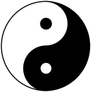

Médecine traditionnelle chinoise
Il y a plus de 5’000 ans, les Chinois connaissaient déjà parfaitement l’anatomie de l’Homme, les lois du Ciel et de l’Univers, ainsi que les rythmes terrestres. Si le monde a évolué depuis lors, il n’a pas fondamentalement changé.

L’Homme matière n’est que le résultat d’une certaine énergie qui s’est condensée, différenciée, qui a évolué dans le temps pour se distinguer des espèces végétale et animale. L’Homme provient à la fois de l’énergie du Ciel (énergie pure) et de la Terre (énergie condensée). Tout dans l’Univers se réduit en matière et en énergie.
Cette énergie subit les grands rythmes universels du jour, de la nuit, des saisons, de l’année, de la Terre et de la Lune. Les phases de plénitude, d’intensité maximale et minimale se suivent en alternance régulière. C’est cette alternance, symbolisée par le Yin et le Yang, qui se retrouve partout.
Le Yin et le Yang, c’est le Tao — la loi — du Ciel et de la Terre. Ils représentent toutes les formes matérielles ; c’est le commencement ou la fin, la vie ou la mort.
Le Yang, c’est la force, la puissance, la marche avant, le Soleil, le feu, le jour, l’été, la chaleur, la mobilité, l’agitation, ce qui domine… le principe masculin.
Le Yin, c’est la nuit, la Lune, le froid, l’hiver, l’immobilité, la stagnation, ce qui est dominé… le principe féminin.
Les deux sont imbriqués l’un dans l’autre et ne peuvent exister que l’un par rapport à l’autre.
Dans l’Univers, pour que la vie existe, il faut une base fondamentale, formée de cinq éléments ou cinq états de la matière ou cinq activités de cette matière, et qui s’intègre à la loi du Yin et du Yang : le Bois, le Feu, la Terre, le Métal et l’Eau, cinq états de la matière qui se suivent comme le jour et la nuit, s’engendrent les uns aux autres en suivant le cycle solaire.
L’Eau (hiver) engendre le Bois ; sans eau, pas de végétation, pas de vie.
Le Bois (printemps) engendre le Feu ; logique, pour faire du feu, il faut du bois.
Le Feu (été) engendre la Terre ; après le feu, il reste les cendres qui forment la Terre.
La Terre (les entre-saisons) engendre le Métal ; dans les cendres, il y a les minéraux.
Le Métal (automne) engendre l’Eau ; c’est l’intervention chimique H2+O = eau, et pour le symbolisme chinois, le métal fondu coule comme le liquide.
Un second cycle, logique quant aux éléments, porte le nom de cycle Ko ou de domination :
- Le Bois soumet la Terre en la recouvrant.
- La Terre soumet l’Eau en l’endiguant.
- L’Eau soumet le feu en l’éteignant.
- Le Métal soumet le Bois en le coupant.
- Ce cycle est important quand il s’applique à l’homme.
Ignorée ou presque par notre médecine occidentale, la notion d’énergie est extrêmement importante et tient la première place dans la médecine chinoise. Cette énergie existe sous deux formes : l’énergie Yong et l’énergie Oé.
L’énergie Yong est le produit final de la nourriture, qui régularise le fonctionnement des cinq organes (cœur — poumons — foie — rate — reins) et des six entrailles (vésicule biliaire — maître du cœur — estomac — gros intestin — intestin grêle — triple réchauffeur — vessie).
L’énergie Oé est l’énergie guerrière, défensive. Elle est extrêmement rapide, vaillante, glissante et se répand dans les chairs, les membranes, la poitrine, le ventre.
En médecine chinoise, les organes sont influencés par le psychisme, les rêves, les aliments, les couleurs, les saisons.
L’énergie circule dans le corps en suivant des voies linéaires qui ne correspondent pas au trajet anatomique d’un nerf, d’une artère ou d’une veine. Ces voies, appelées méridiens, suivent le plus souvent les vallées formées par les saillies musculaires.
Sur les méridiens sont localisés de nombreux points. C’est sur ces points que l’acupuncteur enfonce son aiguille. Parmi tous ces points d’acupuncture, qui sont aussi nombreux que les jours de l’année, les uns ont simplement une action individuelle, d’autres ont une action constante pour tous les méridiens, d’autres ont, en association avec d’autres points, une action particulière.